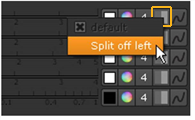
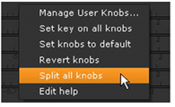
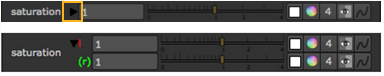

By default, Nuke Studio applies any changes you make to all views of the processed soft effect. To apply changes to a particular view only (for example, the left view but not the right), you must first split the view off in the effect’s controls.
This can be useful when you want to perform the same operation on both views but use different values for each.
Nuke Studio allows you to split views off in order to apply changes to the existing views separately.
| 1. | Insert a soft effect (for example, ColorCorrect) in the timeline. |
| 2. | Select the view you want to make changes to using the buttons above the timeline Viewer. |
| 3. | Open the effect’s controls and click the view button next to the control you want to adjust. |
| 4. | Select Split off [view name]. For example, to apply changes to a view called left, select Split off left. You can also split all the effect’s controls by selecting Split all knobs from the right-click menu. |
 
An eye appears on the split view button . Any changes you make using the control in question are only applied to the view you chose to split off. Changes to controls that have not been split off are still applied to all views.
Once you have split off a view, you can apply changes to the existing views separately. Click on the small arrow on the left side of a control you have split off. This divides the control so that you can see the values for each view.
|
 |
| Adjusting the split control for only the current view and for all views separately. |
| 1. | In the effect’s controls, click the view button . |
| 2. | From the menu that opens, select Unsplit [view]. For example, to unsplit a view called left, you’d select Unsplit left. |
| 3. | Repeat step 2 for all views you want to unsplit. |
The view is unsplit, and all changes you made after splitting it off are lost.
|
|